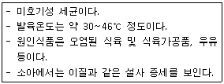

제과기능사 (2011-04-17 기출문제)
1과목: 제조이론
1. 다음 제품 중 비중이 가장 낮은 것은?
- 젤리 롤 케이크
- 버터 스펀지 케이크
- 파운드 케이크
- 옐로 레이어 케이크
(정답률: 49%)

2. 퍼프페이스트리 굽기 후 결점과 원인으로 틀린 것은?
- 수축: 밀어펴기 과다, 너무 높은 오븐온도
- 수포 생성: 단백질 함량이 높은 밀가루로 반죽
- 충전물 흘러 나옴: 충전물량 과다, 봉합 부적절
- 작은 부피: 수분이 없는 경화 쇼트닝을 충전용 유지로 사용
(정답률: 61%)
3. 흰자를 이용한 머랭 제조시 좋은 머랭을 얻기 위한 방법이 아닌 것은?
- 사용 용기 내에 유지가 없어야 한다.
- 머랭의 온도를 따뜻하게 한다.
- 노른자를 첨가한다.
- 주석산 크림을 넣는다.
(정답률: 90%)
4. 공장 설비시 배수관의 최소 내경으로 알맞은 것은?
- 5cm
- 7cm
- 10cm
- 15cm
(정답률: 58%)
5. 설탕 공예용 당액 제조시 고농도화된 당의 결정을 막아주는 재료는?
- 중조
- 주석산
- 포도당
- 베이킹파우더
(정답률: 60%)
6. 실내온도 25℃, 밀가루 온도 25℃, 설탕온도 25℃, 유지온도 20℃, 달걀온도 20℃, 수돗물온도 23℃, 마찰계수 21, 반죽 희망온도가 22℃라면 사용할 물의 온도는?
- -4℃
- -1℃
- 0℃
- 8℃
(정답률: 59%)
7. 스펀지 케이크 400ｇ짜리 완제품을 만들 때 굽기 손실이 20%라면 분할 반죽의 무게는?
- 600ｇ
- 500ｇ
- 400ｇ
- 300ｇ
(정답률: 65%)
8. 소프트 롤을 말 때 겉면이 터지는 경우 조치사항이 아닌 것은?
- 팽창이 과도한 경우 팽창제 사용량을 감소시킨다.
- 설탕의 일부를 물엿으로 대치한다.
- 저온 처리하여 말기를 한다.
- 덱스트린의 점착성을 이용한다.
(정답률: 67%)
9. 다음 제품 중 냉과류에 속하는 제품은?
- 무스케이크
- 젤리 롤 케이크
- 소프트 롤 케이크
- 양갱
(정답률: 78%)
10. 도넛을 튀길 때 사용하는 기름에 대한 설명으로 틀린 것은?
- 기름이 적으면 뒤집기가 쉽다.
- 발연점이 높은 기름이 좋다.
- 기름이 너무 많으면 온도를 올리는 시간이 길어진다.
- 튀김 기름의 평균 깊이는 12~15cm 정도가 좋다.
(정답률: 87%)
11. 케이크 도넛의 껍질색을 진하게 내려고 할 때 설탕의 일부를 무엇으로 대치하여 사용하는가?
- 물엿
- 포도당
- 유당
- 맥아당
(정답률: 36%)
12. 퍼프 페이스트리 제조 시 다른 조건이 같을 때 충전용 유지에 대한 설명으로 틀린 것은?
- 충전용 유지가 많을수록 결이 분명해진다.
- 충전용 유지가 많을수록 밀어 펴기가 쉬워진다.
- 충전용 유지가 많을수록 부피가 커진다.
- 충전용 유지는 가소성 범위가 넓은 파이용이 적당하다.
(정답률: 56%)
13. 시퐁 케이크 제조시 냉각 전에 팬에서 분리되는 결점이 나타났을 때의 원인과 거리가 먼 것은?
- 굽기 시간이 짧다.
- 밀가루 양이 많다.
- 반죽에 수분이 많다.
- 오븐 온도가 낮다
(정답률: 54%)
14. 아이싱에 사용하는 안정제 중 적정한 농도의 설탕과 산이 있어야 쉽게 굳는 것은?
- 한천
- 펙틴
- 젤라틴
- 로커스트 빈 검
(정답률: 57%)
15. 튀김에 기름을 반복 사용할 경우 일어나는 주요한 변화 중 틀린 것은?
- 중합의 증가
- 변색의 증가
- 점도의 증가
- 발연점의 상승
(정답률: 64%)
16. 빵 90ｇ짜리520개를 만들기 위해 필요한 밀가루 양은?(제품 배합율 180%, 발효 및 굽기 손실은 무시)
- 10kg
- 18kg
- 26kg
- 31kg
(정답률: 57%)
17. 노무비를 절감하는 방법으로 바람직하지 않은 것은?
- 표준화
- 단순화
- 설비 휴무
- 공정시간 단축
(정답률: 79%)
18. 발효가 지나친 반죽으로 빵을 구웠을 때의 제품 특성이 아닌 것은?
- 빵 껍질색이 밝다.
- 신 냄새가 있다.
- 체적이 적다.
- 제품의 조직이 고르다.
(정답률: 65%)
19. 다음 중 굽기 과정에서 일어나는 변화로 틀린 것은?
- 글루텐이 응고된다.
- 반죽의 온도가 90℃일 때 효소의 활성이 증가한다.
- 오븐 팽창이 일어난다.
- 향이 생성된다.
(정답률: 74%)
20. 제빵의 일반적인 스펀지 반죽방법에서 가장 적당한 스펀지 온도는?
- 12~15도
- 18~20도
- 23~25도
- 29~32도
(정답률: 74%)
2과목: 재료과학
21. 비용적의 단위로 옳은 것은?
- ㎤/g
- ㎠/g
- ㎤/㎖
- ㎠/㎖
(정답률: 69%)
22. 연속식 제빵법에 관한 설명으로 틀린 것은?
- 액체 발효법을 이용하여 연속적으로 제품을 생산한다.
- 발효 손실 감소, 인력 감소 등의 이점이 있다.
- 3~4기압의 디벨로퍼로 반죽을 제조하기 때문에 많은 양의 산화제가 필요하다.
- 자동화 시설을 갖추기 위해 설비공간의 면적이 많이 소요된다.
(정답률: 52%)
23. 다음 제빵 공정 중 시간보다 상태로 판단하는 것이 좋은 공정은?
- 포장
- 분할
- 2차 발효
- 성형
(정답률: 68%)
24. 중간 발효에 대한 설명으로 틀린 것은?
- 중간발효는 온도 32℃ 이내, 상대습도 75% 전후에서 실시한다.
- 반죽의 온도, 크기에 따라 시간이 달라진다.
- 반죽의 상처회복과 성형을 용이하게 하기 위함이다.
- 상대습도가 낮으면 덧가루 사용량이 증가한다.
(정답률: 71%)
25. 제빵공정 중 패닝 시 틀(팬)의 온도로 가장 적합한 것은?
- 20℃
- 32℃
- 55℃
- 70℃
(정답률: 68%)
26. 이스트 2%를 사용했을 때 150분 발효시켜 좋은 결과를 얻었다면, 100분 발효시켜 같은 결과를 얻기 위해 얼마의 이스트를 사용하면 좋을까?
- 1%
- 2%
- 3%
- 4%
(정답률: 61%)
27. 다음 중 반죽 10kg을 혼합할 때 가장 적합한 믹서의 용량은?
- 8kg
- 10kg
- 15kg
- 30kg
(정답률: 67%)
28. 제빵 냉각법 중 적합하지 않은 것은?
- 급속냉각
- 자연냉각
- 터널식 냉각
- 에어콘디션식 냉각
(정답률: 58%)
29. 냉동반죽에 사용되는 재료와 제품의 특성에 대한 설명 중 틀린 것은?
- 일반 제품보다 산화제 사용량을 증가시킨다.
- 저율배합인 프랑스빵이 가장 유리하다.
- 유화제를 사용하는 것이 좋다.
- 밀가루는 단백질의 함량과 질이 좋은 것을 사용한다.
(정답률: 61%)
30. 오버베이킹에 대한 설명으로 옳은 것은?
- 높은 온도의 오븐에서 굽는다.
- 짧은 시간 굽는다.
- 제품의 수분 함량이 많다
- 노화가 빠르다
(정답률: 56%)
3과목: 영양학
31. 술에 대한 설명으로 틀린 것은?
- 달걀 비린내, 생크림의 비린 맛 등을 완화시켜 풍미를 좋게 한다.
- 양조주란 곡물이나 과실을 원료로 하여 효모로 발효시킨 것이다
- 증류주란 발효시킨 양조주를 증류한 것이다.
- 혼성주란 증류주를 기본으로 하여 정제당을 넣고 과실 등의 추출물로 향미를 낸 것으로 대부분 알코올 농도가 낮다
(정답률: 73%)
32. 맥아에 함유되어 있는 아밀라아제를 이용하여 전분을 당화시켜 엿을 만든다. 이 때 엿에 주로 함유되어 있는 당류는?
- 포도당
- 유당
- 과당
- 맥아당
(정답률: 66%)
33. 식염이 반죽의 물성 및 발효에 미치는 영향에 대한 설명으로 틀린 것은?
- 흡수율이 감소한다.
- 반죽시간이 길어진다.
- 껍질 색상을 더 진하게 한다.
- 프로테아제의 활성을 증가시킨다.
(정답률: 40%)
34. 다음 중 코팅용 초콜릿이 갖추어야 하는 성질은?
- 융점이 항상 낮은 것
- 융점이 항상 높은 것
- 융점이 겨울에는 높고, 여름에는 낮은 것
- 융점이 겨울에는 낮고, 여름에는 높은 것
(정답률: 62%)
35. 어떤 밀가루에서 젖은 글루텐을 채취하여 보니 밀가루 100g에서 36g이 되었다. 이 때 단백질 함량은?
- 9%
- 12%
- 15%
- 18%
(정답률: 51%)
36. 다음 중 효소에 대한 설명으로 틀린 것은?
- 생체내의 화학반응을 촉진시키는 생체 촉매이다.
- 효소반응은 온도, ph, 기질농도 등에 영향을 받는다.
- B-아밀라아제를 액화효소, a-아밀라아제를 당화효소라 한다.
- 효소는 특정기질에 선택적으로 작용하는 기질 특이성이 있다.
(정답률: 65%)
37. 동물의 가죽이나 뼈 등에서 추출하며 안정제로 사용되는 것은?
- 젤라틴
- 한천
- 펙틴
- 카라기난
(정답률: 78%)
38. 제빵에 가장 적합한 물은?
- 경수
- 연수
- 아경수
- 알칼리수
(정답률: 85%)
39. 생이스트의 구성 비율이 올바른 것은?
- 수분8%, 고형분92%정도
- 수분 92%, 고형분 8%정도
- 수분 70%, 고형분 30%정도
- 수분 30%, 고형분 70%정도
(정답률: 62%)
40. 커스터드 크림에서 계란은 주로 어떤 역할을 하는가?
- 쇼트닝 작용
- 결합제
- 팽창제
- 저장성
(정답률: 76%)
41. 다음 중 유지의 산패와 거리가 먼 것은?
- 온도
- 수분
- 공기
- 비타민E
(정답률: 87%)
42. 버터를 쇼트닝으로 대치하려 할 때 고려해야 할 재료와 거리가 먼 것은?
- 유지 고형질
- 수분
- 소금
- 유당
(정답률: 40%)
43. 믹서 내에서 일어나는 물리적 성질을 파동 곡선 기록기로 기록하여 밀가루의 흡수율, 믹싱 시간, 믹싱 내구성 등을 측정하는 기계는?
- 패리노 그래프
- 익스텐소그래프
- 아밀로그래프
- 분광분석기
(정답률: 66%)
44. 휘핑용 생크림에 대한 설명 중 틀린 것은?
- 유지방 40% 이상의 진한 생크림을 쓰는 것이 좋음
- 기포성을 이용하여 제조함
- 유지방이 기포 형성의 주체임
- 거품의 품질 유지를 위해 높은 온도에서 보관함
(정답률: 78%)
45. 단당류 2~10개로 구성된 당으로, 장내의 비피더스균 증식을 활발하게 하는 당은?
- 올리고당
- 고과당
- 물엿
- 이성화당
(정답률: 61%)
46. 식빵에 당질50%, 지방 5%, 단백질 9%, 수분24%, 회분 2%가 들어있다면 식빵을 100g 섭취하였을 때 열량은?
- 281kcal
- 301kcal
- 326kcal
- 506kcal
(정답률: 54%)
47. 단백질의 가장 주요한 기능은?
- 체온유지
- 유화작용
- 체조직 구성
- 체액의 압력조절
(정답률: 77%)
48. 수분의 필요량을 증가시키는 요인이 아닌 것은?
- 장기간의 구토, 설사, 발열
- 지방이 많은 음식을 먹은 경우
- 수술, 출혈, 화상
- 알코올 또는 카페인의 섭취
(정답률: 57%)
49. 불포화지방산에 대한 설명 중 틀린 것은?
- 불포화지방산은 산패되기 쉽다.
- 고도 불포화지방산은 성인병을 예방한다.
- 이중결합 2개 이상의 불포화지방산은 모두 필수 지방산이다.
- 불포화지방산이 많이 함유된 유지는 실온에서 액상이다.
(정답률: 50%)
50. 글리코겐이 주로 합성되는 곳은?
- 간, 신장
- 소화관, 근육
- 간, 혈액
- 간, 근육
(정답률: 60%)
4과목: 식품위생학
51. 식품위생법에서 식품 등의 공전은 누가 작성, 보급 하는가?
- 보건복지부장관
- 식품의약품안전청장
- 국립보건원장
- 시, 도지사
(정답률: 87%)
52. 변질되기 쉬운 식품을 생산지로부터 소비자에게 전달하기까지 저온으로 보존하는 시스템은?
- 냉장유통체계
- 냉동유통체계
- 저온유통체계
- 상온유통체계
(정답률: 67%)
53. 식중독 발생 현황에서 발생 빈도가 높은 우리나라 3대 식중독 원인 세균이 아닌 것은?
- 살모넬라균
- 포도상구균
- 장염 비브리오균
- 바실러스 세레우스
(정답률: 76%)
54. 어육이나 식육의 초기부패를 확인하는 화학적 검사방법으로 적합하지 않은 것은?
- 휘발성 염기질소량의 측정
- ph의 측정
- 트리메틸아민 양의 측정
- 탄력성의 측정
(정답률: 62%)
55. 아래에서 설명하는 식중독 원인균은?

- 캄필로박터 제주니
- 바실러스 세레우스
- 장염비브리오
- 병원성 대장균
(정답률: 38%)
56. 산화방지제와 거리가 먼 것은?
- 부틸히드록시아니솔(BHA)
- 디부틸히드록시톨루엔(BHT)
- 몰식자산프로필 (propyl gallate)
- 비타민A
(정답률: 72%)
57. 식품첨가물에 의한 식중독으로 규정되지 않는 것은?
- 허용되지 않은 첨가물의 사용
- 불순한 첨가물의 사용
- 허용된 첨가물의 과다 사용
- 독성물질을 식품에 고의로 첨가
(정답률: 64%)
58. 황색포도상구균 식중독의 특징으로 틀린 것은?
- 잠복기가 다른 식중독균보다 짧으며 회복이 빠르다
- 치사율이 다른 식중독균보다 낮다
- 그람 양성균으로 장내독소를(enterotoxin) 생산한다.
- 발열이 24~48시간 정도 지속된다.
(정답률: 42%)
59. 병원체가 음식물, 손, 식기, 완구, 곤충 등을 통하여 입으로 침입하여 감염을 일으키는 것 중 바이러스에 의한 것은?
- 이질
- 폴리오
- 장티푸스
- 콜레라
(정답률: 45%)
60. 오염된 우유를 먹었을 때 발생할 수 있는 인수공통감염병이 아닌 것은?
- 파상열
- 결핵
- Q-열
- 야토병
(정답률: 50%)